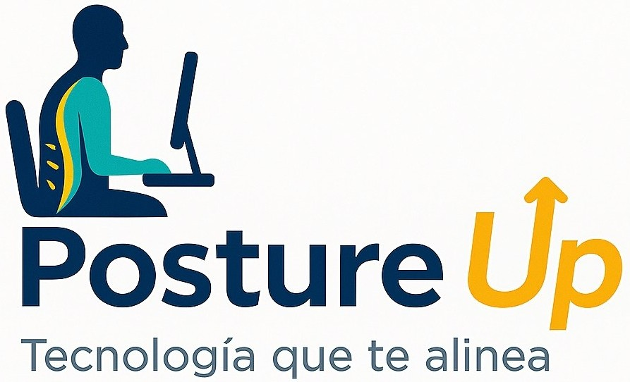
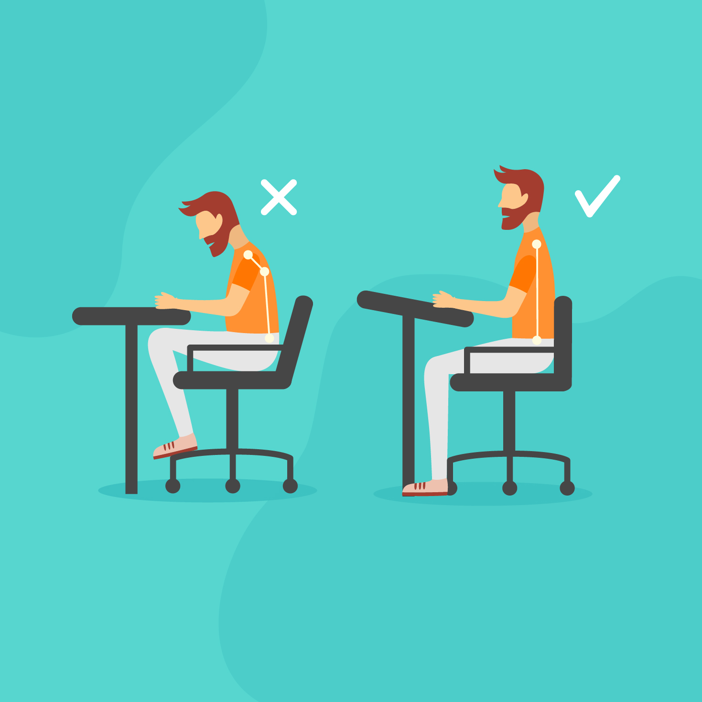
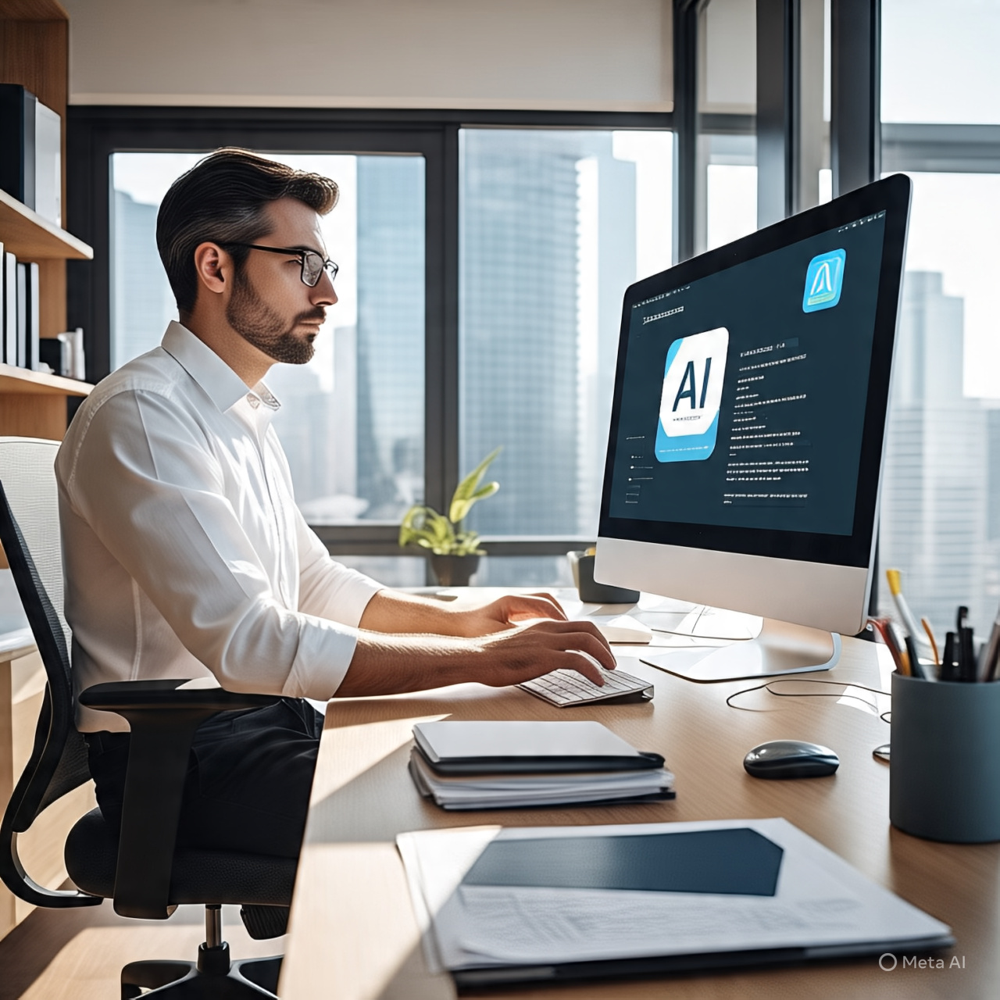

Tecnología que cuida tu postura, tu salud y tu bienestar laboral.

Una mala postura puede causar
migrañas, fatiga, estrés,
hernias y más.
¡Cuídala antes que duela!
Una mala postura prolongada puede provocar no solo dolores musculares, sino también fatiga constante, problemas de circulación, hernias discales e incluso alteraciones en el estado de ánimo. Con el tiempo, estos efectos se vuelven crónicos, afectando tu rendimiento, tu salud física y tu bienestar emocional.
PostureUp es tu aliado tecnológico: detecta desviaciones en tu postura mediante la cámara, y te recuerda hacer pausas activas para mejorar tu ergonomía sin interrumpir tu trabajo.

7 de cada 10 trabajadores de oficina en Perú sufre dolor postural crónico.
Más de 6 horas sentados sin pausas generan fatiga, tensión muscular y desgaste físico.
🧍♀️¿Dolor como parte del trabajo? No debería ser así.
💡PostureUp no solo mejora la postura. Conecta tecnología con empatía, mejora la calidad de vida en el trabajo y construye bienestar desde la ciencia.
👉 Porque cuidar la postura es también cuidar la dignidad.
PostureUp es una aplicación de escritorio creada para prevenir problemas de postura en personas que pasan largas horas frente a una computadora.
Utiliza inteligencia artificial y la cámara web para monitorear tu postura en tiempo real, sin necesidad de conexión constante a internet.
Se inicia automáticamente con la computadora, consume pocos recursos y no interfiere con tu trabajo.
Saber másSomos estudiantes de .... que unimos nuestras habilidades para desarrollar una solución tecnológica con mejora de la calidad de vida.
Este proyecto nació como parte de un trabajo universitario y se transformó en un emprendimiento tras ganar un concurso interno de innovación.
Creemos firmemente que la tecnología debe estar al servicio de las personas, comenzando por mejorar cómo trabajamos y cuidamos nuestra salud cada día.
Saber másEste proyecto es desarrollado por estudiantes de distintas carreras de la Universidad Privada del Norte (UPN) y se encuentra reservado como parte de la propiedad intelectual universitaria.
Si deseas ponerte en contacto con el equipo o realizar una consulta, presiona el botón a continuación.
El equipo está conformado por estudiantes de UPN de distintas carreras, quienes lideran este proyecto con apoyo de asesores especializados en tecnología e innovación.